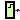

| Name | Description |
|---|---|
| Digital Set Source | |
|  Step | Digital Step Source |
| Digital Tabular Source | |
| Digital Pulse Source | |
| Digital Clock Source |
 Modelica.Electrical.Digital.Sources.Set
Modelica.Electrical.Digital.Sources.Set
Sets a nine valued digital signal, which is specified by the setval parameter.
To specify setval, the integer code has to be used.
Code Table
| Logic value | Integer code | Meaning |
| 'U' | 1 | Uninitialized |
| 'X' | 2 | Forcing Unknown |
| '0' | 3 | Forcing 0 |
| '1' | 4 | Forcing 1 |
| 'Z' | 5 | High Impedance |
| 'W' | 6 | Weak Unknown |
| 'L' | 7 | Weak 0 |
| 'H' | 8 | Weak 1 |
| '-' | 9 | Don't care |
If the logic values are imported by
import L = Modelica.Electrical.Digital.Interfaces.LogicValue;
they can be used to specify the parameter, e.g. L.'0' for forcing 0.
| Type | Name | Default | Description |
|---|---|---|---|
| Logic | x | L.'1' | Logic value to be set |
| Type | Name | Description |
|---|---|---|
| output DigitalOutput | y |
block Set "Digital Set Source" import D = Modelica.Electrical.Digital; import L = Modelica.Electrical.Digital.Interfaces.LogicValue; parameter D.Interfaces.Logic x=L.'1' "Logic value to be set"; D.Interfaces.DigitalOutput y; algorithm assert(x >= L.min and x <= L.max, "Parameter is no logic value"); y := x; end Set;
 Modelica.Electrical.Digital.Sources.Step
Modelica.Electrical.Digital.Sources.Step
The step source output signal steps from the value before to the value after at the time stepTime.
To specify the logic value parameters, the integer code has to be used.
Code Table
| Logic value | Integer code | Meaning |
| 'U' | 1 | Uninitialized |
| 'X' | 2 | Forcing Unknown |
| '0' | 3 | Forcing 0 |
| '1' | 4 | Forcing 1 |
| 'Z' | 5 | High Impedance |
| 'W' | 6 | Weak Unknown |
| 'L' | 7 | Weak 0 |
| 'H' | 8 | Weak 1 |
| '-' | 9 | Don't care |
If the logic values are imported by
import L = Modelica.Electrical.Digital.Interfaces.LogicValue;
they can be used to specify the parameter, e.g. L.'0' for forcing 0.
| Type | Name | Default | Description |
|---|---|---|---|
| Logic | before | L.'0' | Logic value before step |
| Logic | after | L.'1' | Logic value after step |
| Real | stepTime | 1 | step time |
| Type | Name | Description |
|---|---|---|
| output DigitalOutput | y |
block Step "Digital Step Source"
import D = Modelica.Electrical.Digital;
import L = Modelica.Electrical.Digital.Interfaces.LogicValue;
parameter D.Interfaces.Logic before=L.'0' "Logic value before step";
parameter D.Interfaces.Logic after=L.'1' "Logic value after step";
parameter Real stepTime=1 "step time";
D.Interfaces.DigitalOutput y;
algorithm
assert(before >= L.min and before <= L.max, "Parameter is no logic value");
assert(after >= L.min and after <= L.max, "Parameter is no logic value");
when initial() then
y := before;
end when;
if time >= stepTime then
y := after;
else
y := before;
end if;
equation
end Step;
 Modelica.Electrical.Digital.Sources.Table
Modelica.Electrical.Digital.Sources.Table
The table source output signal y steps to the values of the x table at the corresponding
timepoints in the t table.
The initial value is specified by y0.
To specify the logic value parameters, the integer code has to be used.
Code Table
| Logic value | Integer code | Meaning |
| 'U' | 1 | Uninitialized |
| 'X' | 2 | Forcing Unknown |
| '0' | 3 | Forcing 0 |
| '1' | 4 | Forcing 1 |
| 'Z' | 5 | High Impedance |
| 'W' | 6 | Weak Unknown |
| 'L' | 7 | Weak 0 |
| 'H' | 8 | Weak 1 |
| '-' | 9 | Don't care |
If the logic values are imported by
import L = Modelica.Electrical.Digital.Interfaces.LogicValue;
they can be used to specify the parameter, e.g. L.'0' for forcing 0.
| Type | Name | Default | Description |
|---|---|---|---|
| Logic | x[:] | {1} | |
| Real | t[size(x, 1)] | {1} | |
| Logic | y0 | L.'U' |
| Type | Name | Description |
|---|---|---|
| output DigitalOutput | y |
block Table "Digital Tabular Source"
import D = Modelica.Electrical.Digital;
import L = Modelica.Electrical.Digital.Interfaces.LogicValue;
parameter D.Interfaces.Logic x[:]={1};
parameter Real t[size(x, 1)]={1};
parameter D.Interfaces.Logic y0=L.'U';
final parameter Integer n=size(x, 1);
D.Interfaces.DigitalOutput y;
algorithm
if initial() then
assert(y0 >= L.min and y0 <= L.max, "Parameter y0 is not of type Logic");
assert(n > 0, "Invalid size of table (n < 1)");
for i in 1:n loop
assert(x[i] >= L.min and x[i] <= L.max, "Table element is not of type Logic");
end for;
end if;
y := y0;
for i in 1:n loop
if time >= t[i] then
y := x[i];
end if;
end for;
end Table;
 Modelica.Electrical.Digital.Sources.Pulse
Modelica.Electrical.Digital.Sources.Pulse
The pulse source forms pulses between the quiet value and the pulse value. The pulse length width is specified in percent of the period length period. The number of periods is specified by nperiod. If nperiod is less than zero, the number of periods is unlimited.
To specify the logic value parameters, the integer code has to be used.
Code Table
| Logic value | Integer code | Meaning |
| 'U' | 1 | Uninitialized |
| 'X' | 2 | Forcing Unknown |
| '0' | 3 | Forcing 0 |
| '1' | 4 | Forcing 1 |
| 'Z' | 5 | High Impedance |
| 'W' | 6 | Weak Unknown |
| 'L' | 7 | Weak 0 |
| 'H' | 8 | Weak 1 |
| '-' | 9 | Don't care |
If the logic values are imported by
import L = Modelica.Electrical.Digital.Interfaces.LogicValue;
they can be used to specify the parameter, e.g. L.'0' for forcing 0.
| Type | Name | Default | Description |
|---|---|---|---|
| Real | width | 50 | Widths of pulses in % of periods |
| Time | period | 1 | Time for one period [s] |
| Time | startTime | 0 | Output = offset for time < startTime [s] |
| Logic | pulse | L.'0' | |
| Logic | quiet | L.'1' | |
| Integer | nperiod | -1 | Number of periods (< 0 means infinite number of periods) |
| Type | Name | Description |
|---|---|---|
| output DigitalOutput | y |
model Pulse "Digital Pulse Source"
import D = Modelica.Electrical.Digital;
import L = Modelica.Electrical.Digital.Interfaces.LogicValue;
parameter Real width(
final min=Modelica.Constants.small,
final max=100) = 50 "Widths of pulses in % of periods";
parameter Modelica.SIunits.Time period(final min=Modelica.Constants.small)=
1 "Time for one period";
parameter Modelica.SIunits.Time startTime=0
"Output = offset for time < startTime";
parameter D.Interfaces.Logic pulse=L.'0';
parameter D.Interfaces.Logic quiet=L.'1';
Modelica.SIunits.Time T0(final start=startTime)
"Start time of current period";
parameter Integer nperiod=-1
"Number of periods (< 0 means infinite number of periods)";
Integer np(start=0);
D.Interfaces.DigitalOutput y;
algorithm
if nperiod == 0 then
y := quiet;
elseif (nperiod >= np) or (nperiod < 0) then
when sample(startTime, period) then
T0 := time;
if (nperiod > 0) then
np := np + 1;
end if;
end when;
y := if (time < startTime or time >= T0 + ((width*period)/
100)) or not (nperiod >= np or nperiod < 0) then quiet else pulse;
else
y := quiet;
end if;
end Pulse;
The clock source forms pulses between the '0' value (forcing 0) and the '1' value (forcing 1). The pulse length width is specified in percent of the period length period. The number of periods is unlimited. The first pulse starts at startTime.
The clock source is a special but often used variant of the pulse source.
| Type | Name | Default | Description |
|---|---|---|---|
| Time | startTime | 0 | Output = offset for time < startTime [s] |
| Time | period | 1 | Time for one period [s] |
| Real | width | 50 | Width of pulses in % of period |
| Type | Name | Description |
|---|---|---|
| output DigitalOutput | y | Connector of Digital output signal |
model Clock "Digital Clock Source"
import D = Modelica.Electrical.Digital;
import L = Modelica.Electrical.Digital.Interfaces.LogicValue;
parameter Modelica.SIunits.Time startTime=0
"Output = offset for time < startTime";
parameter Modelica.SIunits.Time period(
final min=Modelica.Constants.small)=1 "Time for one period";
parameter Real width(
final min=Modelica.Constants.small,
final max=100) = 50 "Width of pulses in % of period";
D.Interfaces.DigitalOutput y "Connector of Digital output signal";
protected
Modelica.SIunits.Time t_i(final start=startTime)
"Start time of current period";
Modelica.SIunits.Time t_width=period*width/100;
algorithm
when sample(startTime, period) then
t_i := time;
end when;
y := if (not time>=startTime) or time >= t_i + t_width then L.'0' else L.'1';
end Clock;